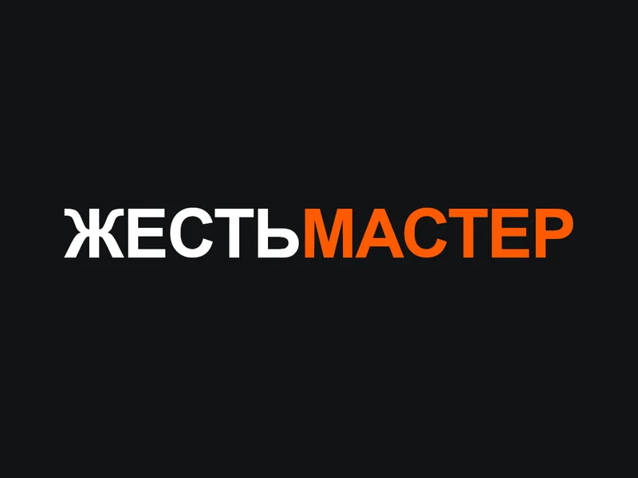
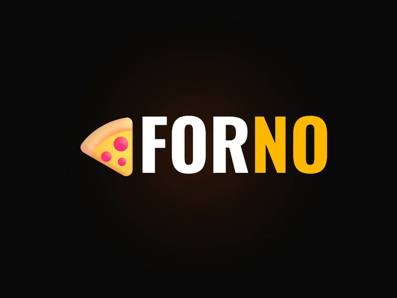
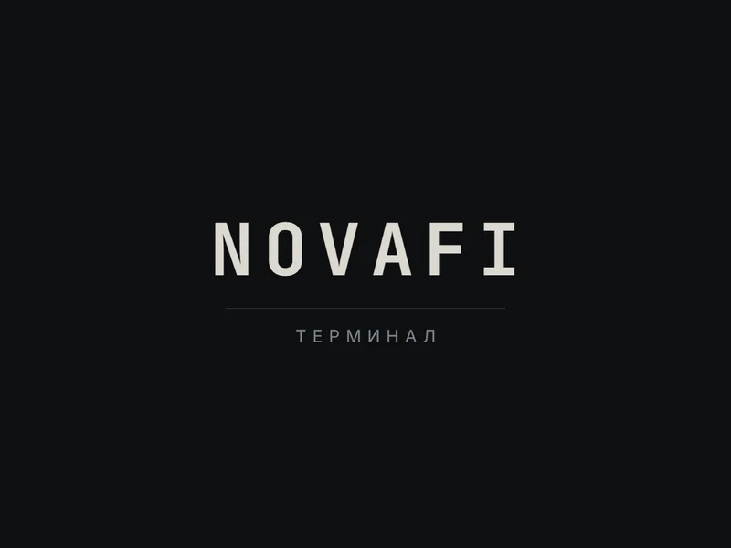
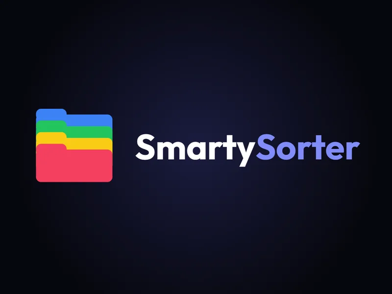
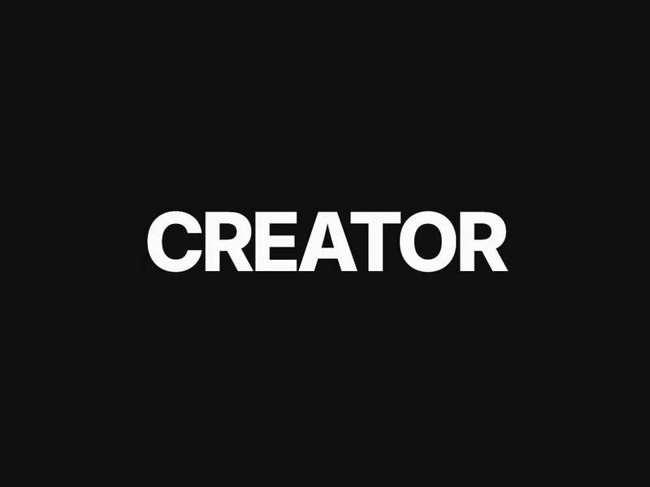

Сайты, боты,
автоматизация.
Разрабатываю сайты и лендинги (сайты-визитки) любой сложности, Telegram-ботов и Telegram Mini Apps. Чистый код без тяжёлых библиотек, адаптив под любой экран и устройство, быстрая загрузка.
Смотреть проектыПривет! Я Егор. lusty — это мой псевдоним.
Fullstack-разработчик: закрываю проект целиком, от вёрстки до сервера. Пишу на чистом коде — HTML, Tailwind CSS, JavaScript — и подключаю тяжёлые библиотеки только там, где они реально нужны. Беру на себя весь цикл: интерфейс, логика, интеграции с API, деплой и поддержка.
Мои компетенции
Frontend
Лендинги, дашборды и веб-приложения. HTML/CSS с Tailwind, TypeScript, React для сложных интерфейсов — и чистый Vanilla JS там, где его хватает. Адаптив от 320px, анимации на GSAP, 3D на Three.js.
Backend & Automation
Python (FastAPI) и Node.js для серверной части. Telegram-боты и Mini Apps, базы данных (PostgreSQL, SQLite), парсеры, автоматизация. Интеграции с внешними API и платёжными системами.
Apps & Infra
Git и GitHub для версионирования, Docker для изоляции окружения, GitHub Actions для CI/CD. Деплой на Linux VPS через Nginx или на Vercel. От нуля до рабочего продакшна.
Стек
Frontend
Backend
Apps & Infra
Проекты.
Живые демо — можно потыкать прямо здесь, в окне превью. Исходники открыты на GitHub.

Tin Master 3D
Задача
Сайт для цеха металлообработки: лазерная резка, гибка по чертежам, отливы, доборные элементы и профили под ключ. Клиенту нужно наглядно подбирать цвет изделия по палитре RAL.
Что сделано
3D-конфигуратор на Three.js: управление камерой, смена цвета металла по палитре RAL в реальном времени, генерация геометрии отливов и доборных элементов, адаптив под телефон.

Pizza Landing
Задача
Промо-лендинг пиццерии с атмосферным тёмным дизайном, интерактивным меню и UX, который хочется трогать.
Что сделано
Верстка с нуля: фильтрация меню по категориям, анимированные карточки, выезжающая корзина, тач-свайпы. Адаптив от 320px. Без сторонних JS-библиотек.

NovaFi Dashboard
Задача
Дашборд с живыми данными: графики, таблицы, операции и модальные окна. Каркас, который одинаково подходит под админку, CRM и личный кабинет.
Что сделано
SPA-навигация между разделами без перезагрузки, подтягивание данных из внешнего API, отрисовка графиков, формы с пересчётом значений на лету, модальные окна операций и тосты-уведомления. Всё на чистом JS, без React и сборщика состояний.

SmartySorter
Задача
Десктопный сортировщик файлов для Windows — с приятным интерфейсом, гибкой настройкой категорий и без единого стороннего фреймворка на фронте.
Что сделано
Бэкенд на Python в связке с pywebview — нативное окно вместо Electron. Сортировка по категориям в один клик, полноценный undo с восстановлением структуры папок, защита от перезаписи при конфликте имён, редактируемые категории расширений, локализация на 3 языка и тёмная/светлая тема с синхронизацией с ОС.

Creator Portfolio
Задача
Одностраничный лендинг-портфолио с тёмной и светлой темой и плавными переходами между секциями.
Что сделано
Вёрстка с нуля, переключатель тёмной/светлой темы с сохранением в localStorage, модальные окна проектов, кастомные scroll-анимации и форма с валидацией. Ноль сторонних библиотек.
Сколько стоит?
Честные вилки, а не «цена по запросу». Нижняя граница — это реально маленькая задача, а не приманка.
Доработка сайта
от 500 ₽
Правка вёрстки, новый блок, форма, починка бага. От 500 ₽ за мелкую задачу и до 6 000 ₽, если объём побольше.
Ускорение сайта
от 1 000 ₽
Разгон до 90+ в PageSpeed с отчётом «было/стало». Дизайн не трогаю. От 1 000 ₽ за одну страницу и до 9 000 ₽ за весь сайт.
Telegram-бот
от 1 000 ₽
Бот из нескольких кнопок обойдётся в 1 000 ₽. С базой данных, записью клиентов, оплатой, напоминаниями и админкой цену считаем по задаче.
Лендинг
от 1 500 ₽
Одноэкранный промо обойдётся в 1 500 ₽. Полноценный многосекционный сайт с анимациями, формой заявок и адаптивом стоит от 9 000 до 19 000 ₽.
Telegram Mini App
от 1 500 ₽
Приложение внутри Telegram: каталог, запись, корзина, оплата. Базовая версия стоит 1 500 ₽, магазин с админкой считаем по задаче.
Программа для Windows
от 1 500 ₽
Готовый .exe под вашу задачу: обработка файлов, отчёты, автоматизация рутины. Лёгкая, без Electron.
Точную цену назову после того, как вы опишете задачу. Работаю как самозанятый: чек и закрывающие документы не проблема. Можно через безопасную сделку на Kwork, тогда деньги уходят мне только после вашей приёмки.